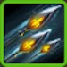
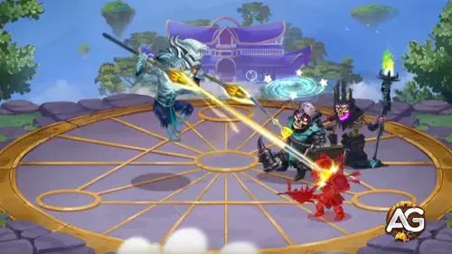
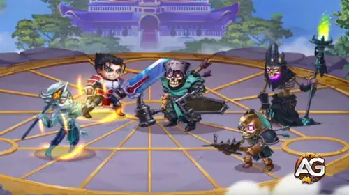
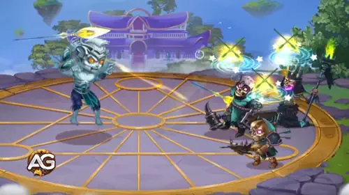
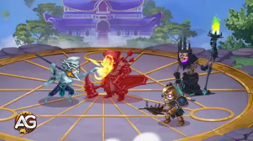
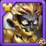
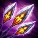

Dante-Leitfaden fur Hero Wars: Dominion Era - Fahigkeiten, Builds und beste Teams
- Von: Alexandre Domingos. .
In Hero Wars: Dominion Era ist Dante einer der vielseitigsten und gefahrlichsten Schutzen im Spiel. Mit seinen beweglichkeitsbasierten Angriffen und seiner Position in der mittleren Reihe kombiniert Dante Tempo und Schaden, um Gegner auszuschalten, bevor sie uberhaupt deine Tanks erreichen.
Egal, ob du neu im Spiel bist oder schon lange spielst, wenn du Dantes Potenzial richtig ausschopfst, verschaffst du dir in PvE- und PvP-Kampfen einen starken Vorteil.

Wer ist Dante in Hero Wars: Dominion Era?
Dante ist ein beweglichkeitsbasierter Schutze, der aus der mittleren Reihe kampft und Gefechte gewinnt, indem er starken Speerschaden mit einer der lastigsten Ausweich-Mechaniken des Spiels kombiniert. Auf dem Papier wirkt er leicht verstandlich, doch in der Praxis wird er deutlich bedrohlicher, sobald seine Ausweich-Schleifen ihn schutzen und zusatzlichen Speerdruck erzeugen.

- Hauptrolle: Schutze
- Hauptattribut: Beweglichkeit
- Position: Kampft in der mittleren Reihe (Position 29)
- Patronat: Fenris, Cain
- Seelensteine: Turm-Shop, Seelentruhen, Seelenatrium
- Beste Synergie: Lyria, Nebula, Aidan
Dante ist besonders, weil er sich nicht nur auf rohe Werte verlasst. Er setzt mehrere Gegner mit Spektralspeeren unter Druck, verstarkt das Ausweichen des Teams, bestraft schwere Treffer mit automatischen Kontern und senkt gleichzeitig die Hauptattribute der Gegner. Dieses Paket gibt ihm Schaden, Storpotenzial und Uberlebensfahigkeit, ohne dass er wie ein klassischer, zerbrechlicher Backline-Carry gespielt werden muss.
Vor- und Nachteile von Dante basierend auf seinen Fahigkeiten
Dante glanzt mit ausweichbasierten Mechaniken und explosivem physischem Schaden, was ihn in Hero Wars: Dominion Era zu einem starken und schwer auszurechnenden Helden macht. Unten findest du seine wichtigsten Starken und Schwachen.
Vorteile:
- Starke Ausweich-Synergie: Dantes Fahigkeit Vergeltung lost zusatzliche Angriffe aus, wenn er ausweicht, und steigert so seinen Schadensausstoss deutlich.
- Hoher Burst-Schaden: Seine Hauptfahigkeit Instrument des Schicksals verursacht hohen physischen Schaden und stort Gegner, indem sie sie zuruckstosst.
- Debuff-Potenzial: Mit Fesseln der Schwache reduziert Dante die Hauptattribute der Gegner und schwacht dadurch ihre Leistung im Kampf.
- Team-Unterstutzung: Seine Fahigkeit Voraussicht erhoht das Ausweichen fur alle Verbundeten und verbessert damit die Uberlebensfahigkeit des Teams.
Nachteile:
- Abhangig von Ausweichen: Dantes Schaden und Nutzen hangen stark davon ab, Angriffe erfolgreich zu vermeiden. Gegen Gegner mit viel Prazision oder Kontrolle ist er deshalb weniger effektiv.
- Zerbrechlich ohne passende Builds: Ohne genug Rustung oder Leben kann Dante fragil sein und schnell an Burst-Schaden sterben.
- Situativer Debuff: Die Attributsreduktion durch Fesseln der Schwache ist nutzlich, hangt aber davon ab, dass seine Speere treffen, und kann unterbrochen werden.
Prioritat beim Aufwerten von Dantes Fahigkeiten - Hero Wars: Dominion Era
Dantes Aufwertungen sollten zuerst die Schadens- und Ausweichmuster verbessern, die sein gesamtes Set definieren, und danach die unterstutzenden Effekte, die seinen Speerdruck im Tausch noch unangenehmer machen.

1 - Instrument des Schicksals (Ultimativ)
Instrument des Schicksals ist Dantes wichtigstes Burst-Werkzeug. Er wirft 4 Spektralspeere auf mehrere Gegner, verursacht 210,193 physischen Schaden und stosst Ziele zuruck. Dadurch erhalt er echte Frontlinien-Storung und setzt gleichzeitig mehrere Gegner unter Druck, weshalb diese Fahigkeit sowohl in PvP als auch in PvE zentral bleibt.
Formel - Physischer Schaden: 210,193 (220% Physischer Angriff + 100 x Level)

Aufwertungsprioritat: Sehr hoch - Diese Fahigkeit sollte zuerst priorisiert werden, weil sie Dantes klarste Quelle fur Burst, Positionsdruck und Artefakt-Aktivierungstempo ist.
Fahigkeitsinfo
- Schlusselworter: physischer Schaden, Ruckstoss, Druck auf mehrere Ziele
- Bereich: mehrere Gegner
2 - Voraussicht
Voraussicht verleiht allen Verbundeten fur 5 Sekunden 16,524 Ausweichen. Diese Fahigkeit macht Dante von einem egoistischen Schadenshelden zu einem echten Enabler fur Ausweich-Teams, weil sie dem ganzen Team hilft, physischen Druck zu uberleben und Dante-Kompositionen deutlich frustrierender zu fassen macht.
Formel - Bonus-Ausweichen: 16,524 (18% Physischer Angriff + 3 x Level)

Aufwertungsprioritat: Hoch - Werte diese Fahigkeit fruh auf, weil Dante-Teams wesentlich stabiler werden, sobald das Ausweich-Fenster gross genug ist, um verfehlte Angriffe und Energieschwankungen zu erzeugen.
Fahigkeitsinfo
- Anfangsabklingzeit: 5 Sekunden
- Abklingzeit: 18 Sekunden
- Schlusselworter: Team-Ausweichen, physische Schadensminderung, Ausweich-Synergie
3 - Fesseln der Schwache
Fesseln der Schwache fugt Dantes Speertreffern eine Debuff-Ebene hinzu. Immer wenn ein Spektralspeer von Instrument des Schicksals oder Vergeltung trifft, reduziert Dante das Hauptattribut des Gegners fur 5 Sekunden um 7,022. Dadurch sinken je nach Ziel Schaden, Defensivskalierung oder Heilskalierung, was Dante in langen Kampfen wertvoller macht als einen reinen Schadens-Schutzen.
Formel - Reduktion des Hauptattributs: 7,022 (7% Physischer Angriff + 8 x Level - 292)

Aufwertungsprioritat: Mittel-Hoch - In den meisten Builds lohnt es sich, diese Fahigkeit vor Vergeltung zu leveln, weil die Attributsreduktion in Kampfen zuverlassiger greift und Dantes gesamtes Druckprofil verbessert.
Fahigkeitsinfo
- Dauer: 5 Sekunden
- Schlusselworter: Reduktion des Hauptattributs, Speer-Synergie, Debuff-Druck
4 - Vergeltung
Vergeltung ist Dantes automatischer Gegenschlag, wenn der Gegner in sein Ausweichmuster hineinspielt. Nachdem er Schaden ausgewichen ist, der grosser als 5% seiner gesamten Gesundheit war, wirft er einen Spektralspeer auf den nachsten Gegner und verursacht 111,596 physischen Schaden. Der Effekt ist im richtigen Matchup stark, aber bedingter als der Rest seines Kits, weil er erfolgreiche Ausweichmanover und bedeutende eingehende Treffer voraussetzt.
Formel - Physischer Schaden: 111,596 (110% Physischer Angriff + 100 x Level)

Aufwertungsprioritat: Mittel - Diese Fahigkeit ist weiterhin gut, wird aber erst dann wirklich stark, wenn Dante bereits genug Ausweich-Unterstutzung und Uberlebensfahigkeit besitzt, um sie oft auszulosen.
Fahigkeitsinfo
- Abklingzeit: 1 Sekunde
- Ausloser: Ausweichen gegen Schaden uber 5% von Dantes gesamter Gesundheit
- Schlusselworter: Gegenangriff, Ausweich-Ausloser, Einzelzielschaden
Bestes Patronat fur Dante
Dante profitiert am meisten von Pets, die Ausweichen, physischen Angriff und Energiegewinn erhohen und so seinen Schaden und seine Uberlebensfahigkeit verbessern.
1. Platz: Cain

Cain erhoht Dantes Uberlebensfahigkeit und die Verfugbarkeit seiner Fahigkeiten deutlich. Sein Ausweich-Bonus passt perfekt zu Dantes Vergeltung und sorgt dafur, dass mehr Spektralspeere ausgelost werden. Ausserdem stellt Cain Energie wieder her, wenn Dante ausweicht, sodass er seine Ult schneller einsetzen kann.
2. Platz: Fenris

Fenris erhoht Dantes physischen Angriff und seine Rustungsdurchdringung, was den Gesamtschaden verbessert. Der Blend-Effekt bei Basisangriffen kann in langeren Kampfen eingehenden Schaden senken. Deshalb ist Fenris eine starke offensive Option, wenn Cain nicht verfugbar ist.
Beste Skin fur Dante in Hero Wars: Dominion Era
Dantes Skin-Reihenfolge sollte zuerst die Werte verstarken, die sowohl seinen Speerschaden als auch sein ausweichbasiertes Tempo konstant verbessern, und danach zu spezialisierteren defensiven Optionen ubergehen. Der neue Oblivion Skin ist jetzt wichtig, weil Magische Verteidigung Dante hilft, den Magierdruck zu uberleben, der im aktuellen Meta so haufig ist.
Standard-Skin
Wertebonus: Beweglichkeit +1,365
Aufwertungsprioritat: Sehr hoch - Der Standard-Skin ist der beste Einstieg, weil Beweglichkeit Dantes Grundschaden verbessert und gleichzeitig seine naturliche Haltbarkeit durch bessere Stat-Effizienz unterstutzt. In jeder Variante eines Dante-Builds ist dies das universellste Skin-Upgrade.
Gesamtzahl der Agility Skin Stones fur Maximalstufe:
 30,825
30,825
Romantic Skin
Wertebonus: Ausweichen +2,960
Aufwertungsprioritat: Hoch - Romantic Skin ist eines von Dantes wichtigsten Folge-Upgrades, weil mehr Ausweichen mehr Uberleben, mehr verschwendete gegnerische Aktionen und mehr Gelegenheiten fur Retribution in physischen Matchups bedeutet.
Gesamtzahl der Agility Skin Stones fur Maximalstufe:
 55,410
55,410
Solar Skin
Wertebonus: Rustungsdurchdringung +10,650
Aufwertungsprioritat: Hoch - Solar Skin hilft Dante, seinen Speerdruck in sauberere Kills gegen Tanks und Bruiser umzuwandeln. Wenn dein Dante bereits genug uberlebt, wird dieser Skin besonders wertvoll.
Gesamtzahl der Agility Skin Stones fur Maximalstufe:
 55,410
55,410
Winter Skin
Wertebonus: Physischer Angriff +7,120
Aufwertungsprioritat: Mittel-Hoch - Winter Skin ist ein solides Schadens-Upgrade, kommt aber meist nach Beweglichkeit, Ausweichen oder Rustungsdurchdringung, weil diese Werte Dantes gesamten Spielplan besser stabilisieren.
Gesamtzahl der Agility Skin Stones fur Maximalstufe:
 58,412
58,412

Spring Skin
Wertebonus: Gesundheit +106,645
Aufwertungsprioritat: Mittel - Spring Skin hat seinen Wert, wenn du mehr Zahigkeit brauchst, liefert Dante aber normalerweise weniger als die Skins, die direkt seine Ausweich-Schleifen oder seine Totungskraft verbessern.
Gesamtzahl der Agility Skin Stones fur Maximalstufe:
 55,410
55,410

Oblivion Skin
Wertebonus: Magische Verteidigung +10,650
Aufwertungsprioritat: Mittel-Hoch - Oblivion Skin gibt Dante ein wichtiges defensives Upgrade gegen magierlastige Matchups. Er erhoht weder Speerschaden, Ausweich-Schleife noch Rustungsdurchdringung, aber die zusatzliche Magische Verteidigung kann ihn lange genug am Leben halten, um den Kampf weiter zu kontrollieren und Gegner mit wiederholtem Speerdruck zu erledigen.
Alexandres Tipp: Mit vielen starken Magiern im aktuellen Meta verschafft diese Skin Dante etwas Luft und hilft ihm, unter den starksten Helden des Spiels zu bleiben.
Gesamtzahl der Agility Skin Stones fur Maximalstufe:
 55,410
55,410
Dante Artefakt-Prioritat - Hero Wars: Dominion Era
Dantes Artefakte sollten zuerst die ausweichbasierte Struktur verstarken, die seine Kompositionen schwer zu knacken macht, und danach seine personliche Wertebasis fur langere und zuverlassigere Kampfe verbessern.

Speere des Schicksals
Wertebonus: Ausweichen +13,941
Aufwertungsprioritat: Sehr hoch - Dies ist Dantes wichtigstes Artefakt, weil die Waffenaktivierung direkt seine Identitat als Ausweich-Carry unterstutzt. Mehr Ausweichen bei der Aktivierung erhoht die Chance, dass Dante und seine Verbundeten physischen Druck verpuffen lassen und bessere Fenster fur Vergeltung entstehen.

Buch der Illusionen
Wertebonus: Gesundheit +83,649
Ausweichen +4,647
Aufwertungsprioritat: Hoch - Buch der Illusionen gibt Dante eine sehr effiziente Mischung aus Haltbarkeit und Ausweichen. Es schlagt nicht so hart ein wie die Waffenaktivierung im entscheidenden Moment, macht seine Gesamtleistung aber in jedem Kampf stabiler.

Ring der Beweglichkeit
Wertebonus: Beweglichkeit +6,249
Aufwertungsprioritat: Mittel - Ring der Beweglichkeit ist weiterhin ein gutes Artefakt, weil Beweglichkeit bei Dante nie verschwendet ist. Normalerweise kommt es jedoch nach den spezialisierteren Ausweich-Artefakten, die seinen Matchup-Vorteil definieren.
Glyphen-Prioritat fur Dante
Dantes beste Glyphen sind jene, die zuerst seinen Speerschaden verbessern und danach das Ausweich- und Uberlebensmuster verstarken, das ihm erlaubt, Kampfe weiter unter Druck zu setzen. Die Reihenfolge unten folgt der Darstellung im Spiel, das Prioritatsfeld zeigt aber den praktischen Wert.

1. Glyphe - Physischer Angriff
Wertebonus: Physischer Angriff +4,340
Aufwertungsprioritat: Sehr hoch - Dantes wichtigste Schadensfahigkeiten skalieren direkt mit physischem Angriff, daher liefert diese Glyphe den saubersten unmittelbaren Anstieg fur seinen Burst und gesamten Speerdruck.

2. Glyphe - Rustungsdurchdringung
Wertebonus: Rustungsdurchdringung +6,500
Aufwertungsprioritat: Hoch - Rustungsdurchdringung hilft Dante, seinen hohen Speerschaden in echte Kills gegen Tanks und Bruiser umzuwandeln. Sobald sein roher Schaden gut genug ist, wird diese Glyphe zu einem der wertvollsten Folge-Upgrades.

3. Glyphe - Ausweichen
Wertebonus: Ausweichen +1,995
Aufwertungsprioritat: Hoch - Ausweichen macht Dante schwerer festzunageln und gibt Retribution seinen Matchup-Vorteil. Offensivwerte sind anfangs oft starker, aber Ausweichen bleibt ein Kern seiner Identitat.

4. Glyphe - Rustung
Wertebonus: Rustung +6,500
Aufwertungsprioritat: Mittel - Rustung gibt Dante eine bessere Chance, physischen Fokus lang genug zu uberleben, um weiter auszuweichen und Speere zu werfen. Meist geht es hier eher um Stabilitat als um eine direkte Steigerung seiner Siegbedingung.

5. Glyphe - Beweglichkeit
Wertebonus: Beweglichkeit +1,135
- Physischer Angriff durch Beweglichkeit: +1,135
- Rustung durch Beweglichkeit: indirekter Wertegewinn uber das Hauptattribut
Aufwertungsprioritat: Mittel-Hoch - Beweglichkeit wird bei Dante nie verschwendet, aber der direkte Kampfeffekt fuhlt sich meist schwacher an als physischer Angriff, Rustungsdurchdringung oder Ausweichen. Trotzdem bleibt sie ein solider Allround-Wert, sobald die Kern-Glyphen abgedeckt sind.
Wie man Dante in Hero Wars kontert
Dante kann ein gefahrlicher Gegner sein, hat aber klare Schwachen, die du mit den richtigen Helden und Taktiken ausnutzen kannst. Da sein Spielstil vom Ausweichen physischer Treffer lebt, sind Kontrolleffekte und magischer Schaden besonders effektiv.
- Helden mit Magieschaden: Da Dantes Ausweichen nicht gegen magischen oder reinen Schaden wirkt, konnen Helden wie Phobos, Celeste und Iris seine Defensive umgehen und ihm grossen Schaden zufugen. Iris bestraft Dante besonders stark mit reinem Schaden, der Rustung und Ausweichen komplett ignoriert.
- Kontrolleffekte: Helden mit Betaubung, Charm oder Silence konnen Dantes Speerangriffe unterbrechen. Lian ist ein perfekter Konter: Jedes Mal, wenn Dante sie angreift, riskiert er verzaubert zu werden, was seinen Rhythmus zerstort und ihn fur sein Team zum Risiko macht.
- Helden mit hohem Ausweichen: Obwohl Dante selbst stark im Ausweichen ist, tut er sich gegen andere bewegliche Helden schwer. Aurora, Heidi, Yasmine und Qing Mao konnen seinen Angriffen oft entgehen und seine Starke so in einen Nachteil verwandeln. Heidi kann ihn zusatzlich blenden und vergiften, wahrend er seinen Speeren elegant ausweicht.
- Ausnutzen der Positionierung: Dante steht oft nahe an der Front und ist dadurch anfallig fur Flachenkontrolle oder gezielten Burst-Schaden. Gute Positionierung und richtiges Timing konnen seinen Einfluss fruh im Kampf neutralisieren.
Um Dante zu kontern, solltest du Helden einsetzen, die Magieschaden verursachen und seine Aktionen mit Kontrolleffekten unterbrechen konnen. Verlasse dich nicht zu stark auf physischen Schaden oder Helden, die seinen Ausweich-Vorteil nicht ausgleichen konnen.
Dantes beste War Flag in Hero Wars
Dante funktioniert am besten mit War Flags, die entweder seine Tempofenster verstarken, den Wert seines Patron-Pets erhohen oder es seinem Ausweich-Team erleichtern, lang genug zu uberleben, bis der Speerdruck ubernimmt.

War Flag of Pet Strength
Nutzen fur Dante und das Team: Dante verlasst sich oft stark auf Cain oder Fenris, um entweder seine Ausweich-Mechanik oder sein physisches Schadensprofil anzuschieben. War Flag of Pet Strength erhoht den Wert dieser Patron-Unterstutzung und passt naturlich in Dante-Kompositionen, die ohnehin um Pet-Synergien gebaut sind.

War Flag of Frost
Nutzen fur Dante und das Team: Frost hilft Dante-Teams, gegnerische Burst-Fenster und Support-Rotationen sauberer zu uberleben, indem es gegnerische Skill-Level senkt. Das gibt Dante mehr Zeit, Ausweich-Buffs, Ultimates und Speerdruck zu rotieren, ohne zu fruh an Tempo zu verlieren.

War Flag of Decline
Nutzen fur Dante und das Team: Decline ist eine starke situative Option, wenn Dante Sustain-Teams aufbrechen soll. Sein Speerdruck wird deutlich gefahrlicher, wenn gegnerische Heilung reduziert wird und Ziele sich zwischen seinen Schadensfenstern nicht mehr bequem erholen konnen.
Beste Teams fur Dante - Hero Wars: Dominion Era
Dante gehort weiterhin zu den besten Schadensverursachern in Hero Wars, dank hoher Mobilitat, Ausweichen und kraftiger Speerwurfe, die mehrere Gegner treffen. Die besten Teams mit Dante konzentrieren sich im Allgemeinen darauf, seine Uberlebensfahigkeit zu erhohen und seinen Burst-Schaden zu verstarken. Unten findest du defensive Formationen auf hohem Niveau, die seine Leistung in Arena und Gildenkriegen maximieren, sowie offensive Kompositionen, die seinen hohen Schaden und seine Skalierung mit Beweglichkeit optimal nutzen.
| Dante - Bestes Team #1 | |||||
|---|---|---|---|---|---|
|
|
|
|
|
|
|
|
|
|
|
|
|
|
Fazit zum Dante-Leitfaden
Dante bleibt in Hero Wars: Dominion Era ein starker Held und zugleich ein verlasslicher, vielseitiger Carry. Seine Fahigkeit, das Ausweichen fur alle Verbundeten zu erhohen, bietet starke defensive Synergien, besonders an der Seite von Helden wie Aurora. Da er nah an der Front steht, schwacht seine passive Fahigkeit das Hauptattribut der Gegner, was es seinem Team leichter macht, konstant Druck aufzubauen.
Selbst mit dem Erscheinen von Lyria, die gegnerisches Ausweichen reduziert, bleibt Dante stark. Seine passive Fahigkeit kann Lyria kontern, indem sie ihr Hauptattribut senkt und so seine Effektivitat auch dann aufrechterhalt, wenn er einzelne Angriffe nicht ausweicht. Tatsachlich wird Dante voraussichtlich weiterhin in Top-Teams bleiben und oft sogar gemeinsam mit Lyria gespielt werden, statt ausschliesslich gegen sie anzutreten.
Entdecke neue Fahigkeiten mit unseren empfohlenen Helden!
 Der ultimative Augustus-Leitfaden fur Hero Wars: Dominion Era
Der ultimative Augustus-Leitfaden fur Hero Wars: Dominion Era Aidan-Leitfaden - Hero Wars: Dominion Era Fahigkeiten, Artefakte & Teams
Aidan-Leitfaden - Hero Wars: Dominion Era Fahigkeiten, Artefakte & Teams Yasmine-Leitfaden fur Hero Wars: Dominion Era - bester Build & Strategie
Yasmine-Leitfaden fur Hero Wars: Dominion Era - bester Build & StrategieHinterlasse deine Meinung!
Hat dir unser Dante-Leitfaden fur Hero Wars Web und Facebook gefallen? Gibt es etwas, das du nicht verstanden hast oder bei dem du Anderungen vorschlagen mochtest? Wir laden dich ein, an unserem Kommentarbereich auf der Alexandre Games Blogseite teilzunehmen. Teile gerne deine Meinung, stelle Fragen und schicke uns deine Vorschlage.
Klicke auf die Schaltflache unten, um zu starten: